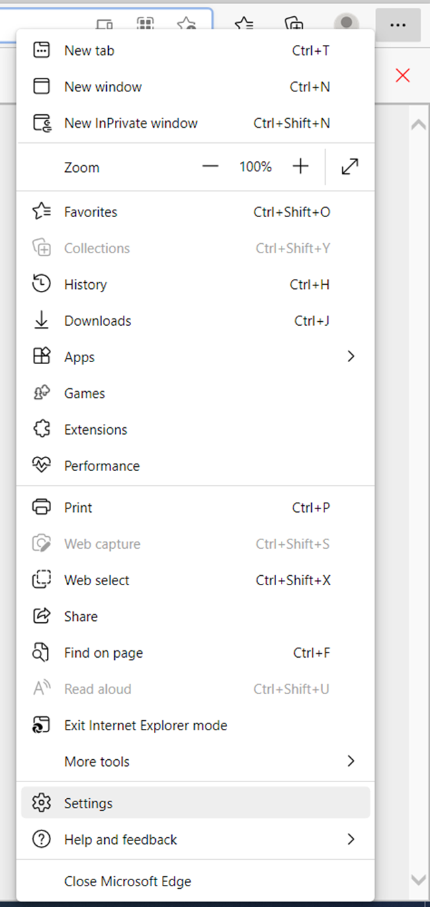
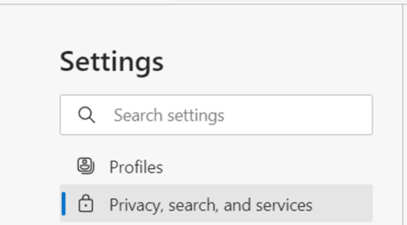
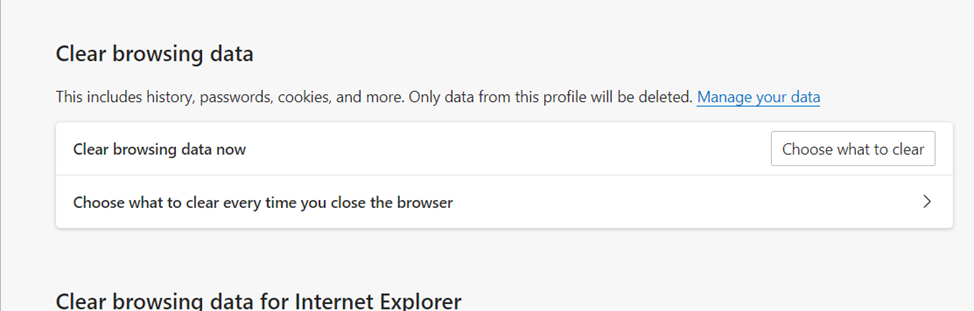
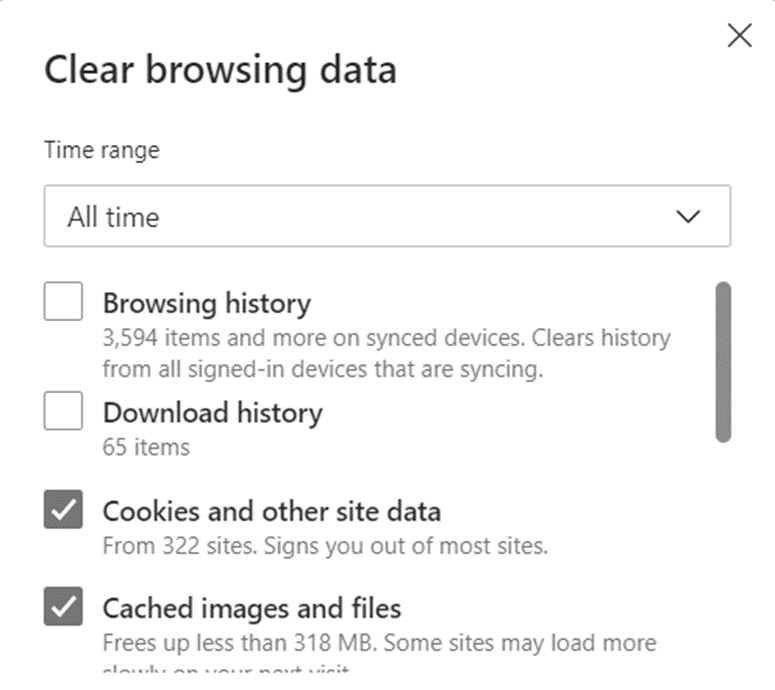
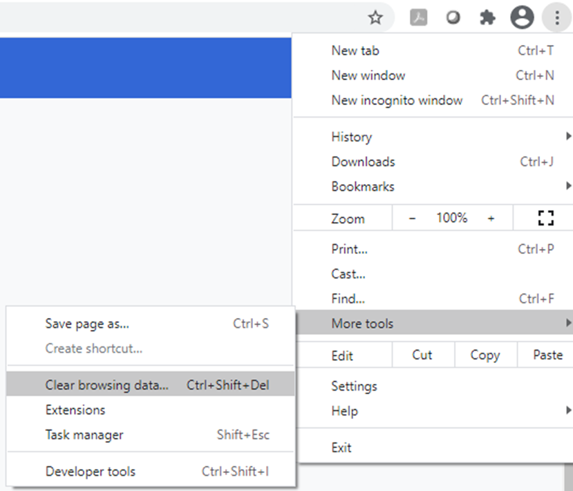
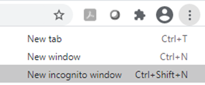

Many web based applications use browser cookies to store session information. Sometimes these cookies can become corrupted resulting in errors or data display issues. Clearing your cache and cookies, can often resolve corruption issues. Also using an incognito session can help to diagnose the presence of cache/cookie issues.
Clearing Cache and Cookies in Microsoft Edge
To clear the cache and cookies in Microsoft Edge:
On the Microsoft Edge window, click the 3 dots in the upper right corner of your browser.
On the Microsoft Edge menu, click Settings.

On the Settings navigation panel, click Privacy, search, and services.

Scroll down to Clear Browsing Data.

Click Choose what to clear.
Select the Cookies an other site-data checkbox, and select the Cached Images and Files checkbox.

Click Clear now. Your cookies and cache are now reset.
Clearing Cache and Cookies in Chrome
To clear the cache and cookies in Chrome:
On the Chrome window, click the 3 dots in the upper right corner of your browser.
On the Chrome menu, click More tools, and then click Clear browsing data...

Under the Basic tab, click the Time range dropdown textbox, and set the time range as appropriate.
Select the Browsing history checkbox, and select the Cookies and other site data checkbox.
Click Clear data. } Wait until the spinning wheel disappears. If you have not cleared browsing data for some time, this may take a few minutes.
Close the Chrome window.
Open a new Chrome window.
Log into Cority again.
Using an Incognito Window
An alternative to the method above is to use an incognito Chrome window. An incognito window is a new browser window free of history, cookies, and site data.
To open an Incognito window, on the Chrome window, click the three dots in the upper right corner of your browser, and then click New incognito window.

A new window opens.
Navigate to go.enviance.com or use your company’s single sign on link and log in.